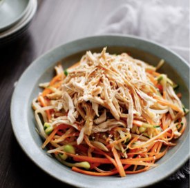

Chicken Salad

Ingredients
chicken breast 100g carrot 40g
cucumber 40g
sprouts 30g
ginger 10g
soy sauce 5g
white sesame 20g
Method:
- Poach the chicken (skip if using already cooked chicken):
Bring a pot with 2 quarts of well salted water (1 tablespoon salt) to a boil. Add the chicken breast (cut into large chunks) and return the water to a simmer. Then turn off the heat, and cover the pot. Let the chicken sit for 15 minutes (time it) or more while you prepare everything else.
- Make the dressing: Prepare the chicken salad dressing in a large bowl. Mix together the mayonnaise, preserves, and lemon juice. Taste for the proper balance of sweetness and acidity. The salad dressing should not be too sweet, nor too sour. Add more preserves or lemon juice until you have reached the balance you want. Add salt and pepper to taste.
- Mix in the chopped celery, bell pepper, olives, red onion, and apple.
- Dice the chicken, mix with dressing and vegetables: Remove the chicken from the poaching water and dice it. (Or dice already cooked chicken if that is what you are using for this salad.) Mix it in with the dressing and vegetables.
- Add lettuce: At this point you can make ahead. When ready to serve, fold in the sliced and chopped iceberg lettuce.